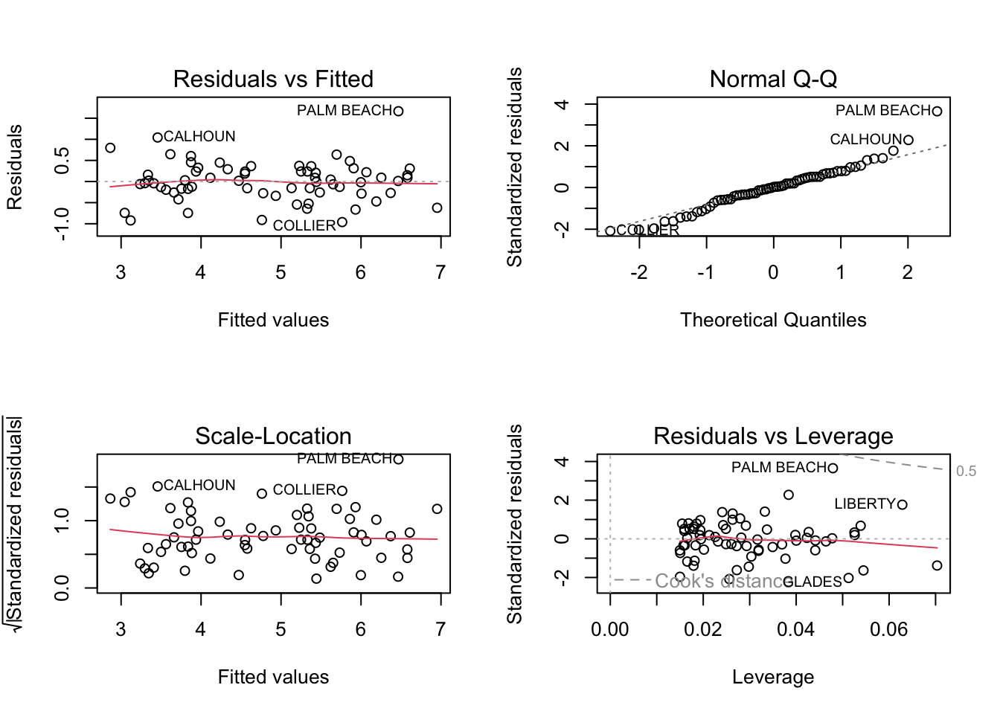

Code
# load necessary packages
library(tidyverse)
library(alr4)
library(smss)
library(knitr)# load necessary packages
library(tidyverse)
library(alr4)
library(smss)
library(knitr)(Data file: house.selling.price.2 from smss R package)
For the house.selling.price.2 data the tables below show a correlation matrix and a model fit using four predictors of selling price.
| Price | Size | Beds | Baths | New | |
|---|---|---|---|---|---|
| Price | 1 | 0.899 | 0.590 | 0.714 | .357 |
| Size | 0.899 | 1 | 0.669 | 0.662 | 0.176 |
| Beds | 0.590 | 0.669 | 1 | 0.334 | 0.267 |
| Baths | 0.714 | 0.662 | 0.334 | 1 | 0.182 |
| New | 0.357 | 0.176 | 0.267 | 0.182 | 1 |
| Estimate | Std. Error | t value | Pr(> | t| ) | |
|---|---|---|---|---|
| (Intercept) | -41.795 | 12.104 | -3.453 | 0.001 |
| Size | 64.761 | 5.630 | 11.504 | 0 |
| Beds | -2.766 | 3.960 | -0.698 | 0.487 |
| Baths | 19.203 | 5.650 | 3.399 | 0.001 |
| New | 18.984 | 3.873 | 4.902 | 0.00000 |
With the these four predictors:
For backward elimination, which variable would be deleted first? Why?
For forward selection, which variable would be added first? Why?
Why do I think BEDS has such a large P-value in the multiple regression model, even though it has a substantial correlation with PRICE?
Using software with these four predictors, find the model that would be selected using each criterion:
R-squared
Adjusted R-squared
PRESS
AIC
BIC
# Read in data
data("house.selling.price", package = "smss")
data <- house.selling.price
# Define the first regression model
model1 <- lm(Price ~ Size + Beds + Baths + New, data = data)
# Define the second regression model
model2 <- lm(Price ~ Size + Beds + New, data = data)
# Define the second regression model
model3 <- lm(Price ~ Size + New, data = data)
# Calculate the R-squared for each model
rsq1 <- summary(model1)$r.squared
rsq2 <- summary(model2)$r.squared
rsq3 <- summary(model3)$r.squared
# Calculate the adjusted R-squared for each model
adj_rsq1 <- summary(model1)$adj.r.squared
adj_rsq2 <- summary(model2)$adj.r.squared
adj_rsq3 <- summary(model3)$adj.r.squared
# Calculate the PRESS statistic for each model
press1 <- sum(resid(model1)/(1 - hatvalues(model1))^2)
press2 <- sum(resid(model2)/(1 - hatvalues(model2))^2)
press3 <- sum(resid(model3)/(1 - hatvalues(model3))^2)
# Calculate the AIC for each model
aic1 <- AIC(model1)
aic2 <- AIC(model2)
aic3 <- AIC(model3)
# Calculate the BIC for each model
bic1 <- BIC(model1)
bic2 <- BIC(model2)
bic3 <- BIC(model3)
# Create a table comparing the models
results <- data.frame(Model = c("Model w/all predictors"
, "Model w/out baths"
, "Model w/out beds and baths"),
R_squared = c(rsq1, rsq2, rsq3),
Adj_R_squared = c(adj_rsq1, adj_rsq2, adj_rsq3),
PRESS = c(press1, press2, press3),
AIC = c(aic1, aic2, aic3),
BIC = c(bic1, bic2, bic3))
# Print the results table
kable(results, caption = "Model Evaluation Metrics")| Model | R_squared | Adj_R_squared | PRESS | AIC | BIC |
|---|---|---|---|---|---|
| Model w/all predictors | 0.7245489 | 0.7129509 | -38424.963 | 2470.942 | 2486.573 |
| Model w/out baths | 0.7240775 | 0.7154550 | -68678.153 | 2469.113 | 2482.139 |
| Model w/out beds and baths | 0.7225963 | 0.7168767 | 6062.399 | 2467.648 | 2478.069 |
Explain which model I prefer and why.
Size and New as predictors and excludes the Beds and Baths variables. I would choose this one because it has the highest adjusted R-squared (0.7168767), the lowest AIC (2467.648) and lowest BIC (2478.069). These metrics do not evaluate a model’s predictive performance; rather, they assess how well a model explains variance in the outcome variable (i.e., explanatory power and simplicity).(Data file: trees from base R)
From the documentation:
“This data set provides measurements of the diameter, height and volume of timber in 31 felled black cherry trees. Note that the diameter (in inches) is erroneously labeled Girth in the data. It is measured at 4 ft 6 in above the ground.”
Tree volume estimation is a big deal, especially in the lumber industry. Use the trees data to build a basic model of tree volume prediction. In particular:
# Read in data
data("trees")
data <- trees
# Define the regression model
model4 <- lm(Volume ~ Girth + Height, data = data)Run regression diagnostic plots on the model. Based on the plots, do you think any of the regression assumptions is violated?
# Generate diagnostic plots
par(mfrow = c(2, 2))
plot(model4)(Data file: florida in alr4 R package)
In the 2000 election for U.S. president, the counting of votes in Florida was controversial. In Palm Beach County in south Florida, for example, voters used a so-called butterfly ballot. Some believe that the layout of the ballot caused some voters to cast votes for Buchanan when their intended choice was Gore.
The data has variables for the number of votes for each candidate—Gore, Bush, and Buchanan.
Run a simple linear regression model where the Buchanan vote is the outcome and the Bush vote is the explanatory variable. Produce the regression diagnostic plots. Is Palm Beach County an outlier based on the diagnostic plots? Why or why not?
# Read in data
data("florida", package = "alr4")
data <- florida
# Define the regression model
model5 <- lm(Buchanan ~ Bush, data = data)
# Generate diagnostic plots
par(mfrow = c(2, 2))
plot(model5)
Take the log of both variables (Bush vote and Buchanan Vote) and repeat the analysis in (A.) Does your findings change?
# Define the regression model
model6 <- lm(log(Buchanan) ~ log(Bush), data = data)
# Generate diagnostic plots
par(mfrow = c(2, 2))
plot(model6)